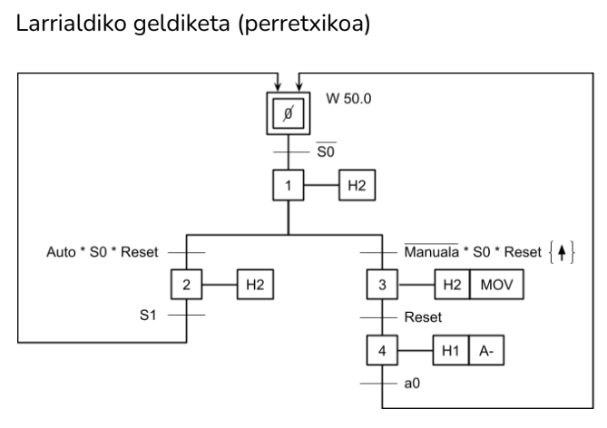

Larrialdiko Grafceta
Gure larrialdiko sekuentzia bi bidetan banatzen da, eta W50.0 marka erabiltzen da.

- 1. etapa: Larrialdiko sakagailua sakatzean, argi gorria piztuko da eta estazioa geldituko da.
- 2. etapa: Perretxikua deskonektatu, hautagailua automatikoan jarri eta reset sakatu (W50.02 aktibatuz).
- 3. etapa: Perretxikua deskonektatu, hautagailua eskuz jarri eta reset sakatu (W50.03 aktibatuz).
- 4. etapa: Reset sakatu eta W50.04 aktibatuko da; balbula elektrobalbula aktibatu eta zerra hasierara itzuliko da.